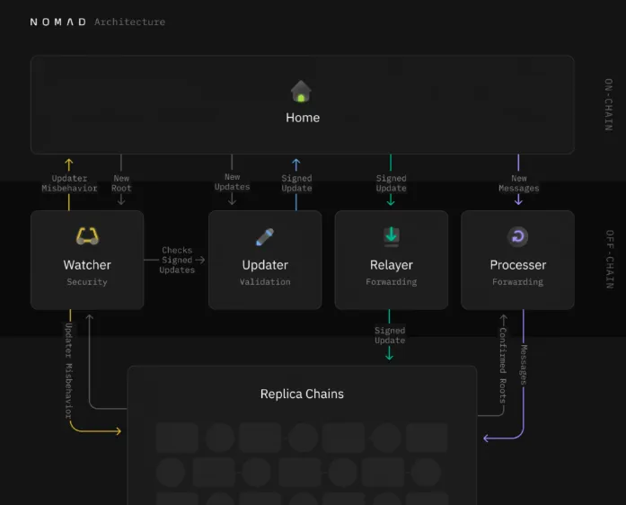

Nomad跨链桥被黑事件分析
author：Thomas_Xu
背景
笔者最近对跨链桥特别感兴趣，于是开始研究跨链桥上的安全事件，其中最典型的非Nomad莫属。Nomad桥于2022年8月初遭遇到了Web3有史以来最混乱的一次攻击，有非常多的散户参与到了这次攻击。总共损失了1.9亿美元，当然，有一种说法是Nomad方面发现事态失控后，也参与了“对自己的攻击”。
简单的来说，这是一个类似于交易重放的攻击。这也是为什么有很多技术上造诣不深的散客也能参与其中的原因。
Nomad
在对漏洞进行分析之前，我们先来解析一下Nomad协议的原理。

简单的来讲就是Chain1在确认收到了eth1后会生成一个Message，Chain2这边会去检查这个Message的真实性，随后会进行换币的一系列操作。
可问题就出在这里，chain2在检查Message的时候出现了一个非常非常严重的漏洞，导致这个Message可以被伪造从而通过chain2的检查。

从上图可以发现：Nomad主要包括Home、Replica合约两部分。其中，Home合约主要负责跨链消息Message的格式化、维护Message默克尔消息树和默克尔树root值队列；Replica合约是所有想要接收跨链消息的区块链都必须部署的，主要负责维护与Home合约对应的默克尔消息树和root值队列、Message的验证和执行。Nomad与其他一对一的跨链通信模型不同，其允许一对N的广播通信。其中，Home合约负责消息生成，而任何希望复制该消息状态或从Home合约接收消息的目标链都必须部署一个与该Home合约对应的Replica合约。
而问题，就出在了Replica合约上。
漏洞分析
0xa5fe9d044e4f3e5aa5bc4c0709333cd2190cba0f4e7f16bcf73f49f83e4a5460 | Tenderly
这里我们直接定位到出问题的Replica合约上。

process函数会检查我们之前提到的message，而messages是一个mapping结构，mapping在空字段上的返回值是0。那也就是说如果acceptableRoot()函数能够接收一个0的输入而返回true即可。
在这个require后，我们的换币操作将畅通无阻。
让我们进入到acceptableRoot()函数中：

这里只需要time > 0即可，而问题的关键就出现在confirmAt这个mapping在初始化的时候，项目方传入的_committedRoot是0。

那这不就巧了嘛，前前后后的各个环节都能对应上。到这里我们已经成功的解决的了message的验证这个事儿。
而为了完成交易，攻击者只需要监控Nomad上的交易，将交易的其他参数直接copy过来，把message和收款地址一换，就大功告成了。

这也是为什么大部分的攻击交易的金额都是一样的原因。
散户为什么能得到消息参与攻击？
在这次事件中，最让人惊讶的是非常多的散户参与到了这次攻击事件中。由于这次攻击需要的技术含量不高，按理来说他们确实有条件参与攻击。
但问题是？他们哪来的消息？
答案是现在各大链都有一些MEV BOT，MEV会尝试跑链上的交易，一旦MEV发现这个交易执行的时候能够盈利，MEV就会自动的执行这个操作。
这样的MEV也叫做搜索机器人。
审计报告提到过？
非常非常讽刺的是，在Quantstamp给Nomad的审计报告中，提到过这个漏洞，只不过当时Quantstamp给了这个漏洞low的评级，可能并没有引起项目方的重视。
我猜测Quantstamp可能认为Nomad项目方不会再init的时候将_committedRoot设置为0。可是…万万没想到发生了这样的事。

审计报告链接：
docs/Nomad-Audit.pdf at 1ff0c55dba2a842c811468c57793ff9a6542ef0f ·Nomad-XYZ/docs (github.com)

true

...
...
This is copyright.